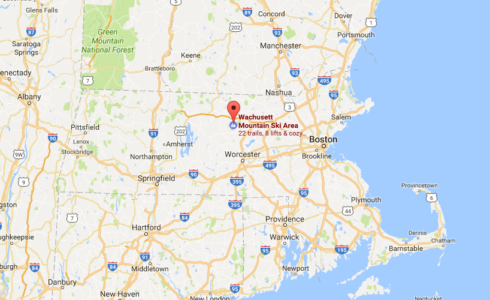
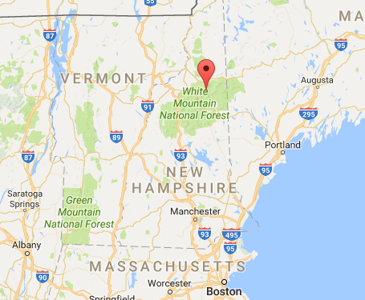
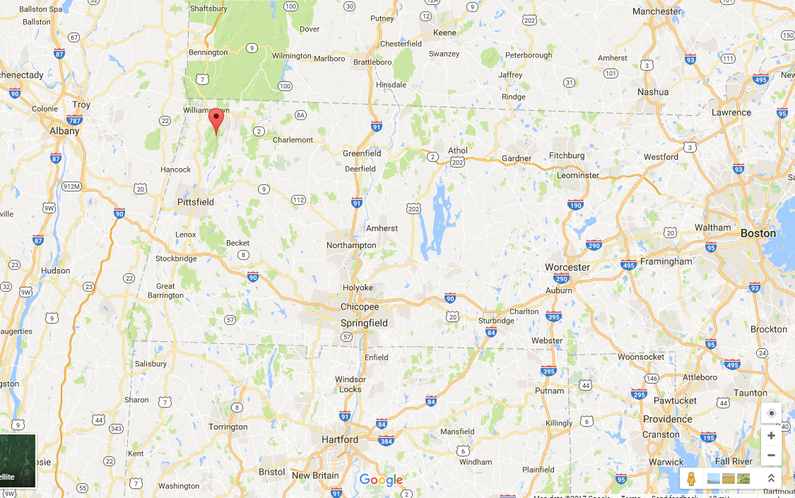
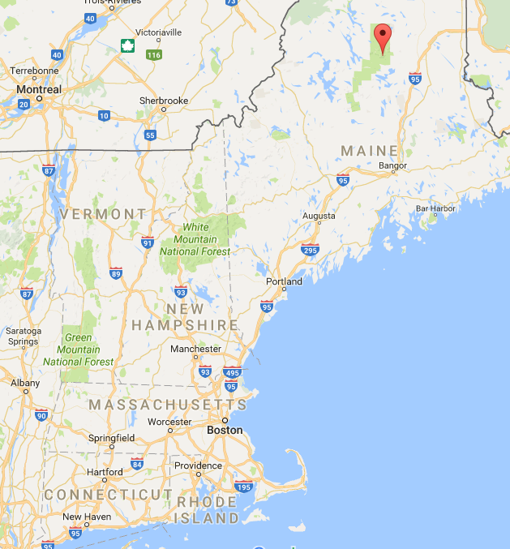

Mountains in New England

Location Of Each Mountian
Mount Wachusett
Location: Prinston, Massachusetts
Coordinates: 42°29′20.7″N 71°53′12.3″W
Mount Washington
Location: Coos Country, New Hampshire
Coordinates: 44°16′14″N 71°18′12″W
Mount Greylock
Location: Berkshire Country Massachusetts
Coordinates: 42°38′13″N 73°09′57″W
Mount Katahdin
Location: Piscataquis County, Maine
Coordinates: 45°54′16″N 68°55′17″W
Help Line | Email for suggestions |